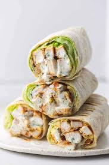

Chicken Wrap

Description
There’s nothing I love more than a quick lunch idea and chicken wraps are among my favorite. There is so much you can do with leftover chicken wrapped inside a tortilla or inside lettuce
Ingredients
- 6 chicken tenders or other leftover chicken
- 1/2 cup Buffalo sauce
- 4 flour tortillas
- 1/4 cup Chunky Blue Cheese
- 1/4 cup shredded lettuce
Optional
- Shredded cheddar cheese
- Tomatoes diced
Steps
- Chop up chicken tenders into small 1-inch or smaller pieces and place in a bowl.
- Pour Buffalo Sauce over chicken and mix to coat.
- Put 1/4 of the buffalo chicken, blue cheese, and lettuce into each wrap.
- Wrap each tortilla and secure with a toothpick if desired.
- Enjoy immediately or store up to 3 days in the refrigerator and enjoy cold or reheated.